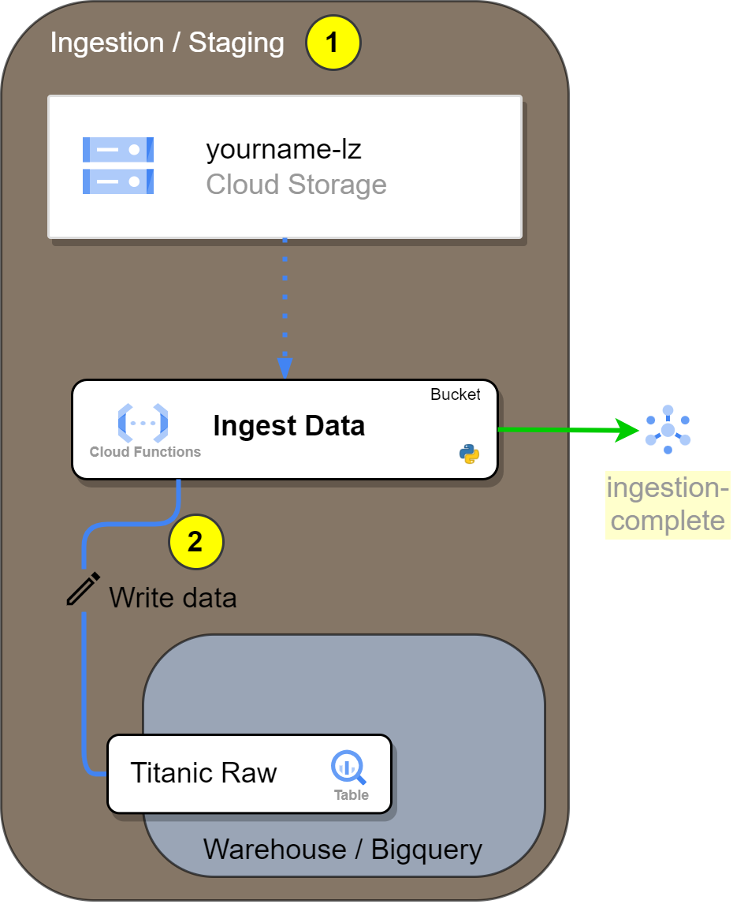

Load a file from Cloud Storage to a Bigquery Table using a Cloud Function¶
- Load a file from Cloud Storage to a Bigquery Table using a Cloud Function
- Introduction
- Tasks
- Create the Google Cloud Resources
- Update the Cloud Function Code
- Deploy the cloud function
- Hints
- Documentation
Introduction¶

In this exercise, we will create the Ingest Data Cloud Function, that will perform the following tasks:
-
The
Ingest Datafunction will actively monitor the[YOURNAME]-lzGoogle Cloud Storage bucket for new files. This is achieved by configuring a trigger topic (PubSub) in the Cloud Function to listen for object creation events in the specified bucket. -
When a new file is detected, the
Ingest Datafunction will read the contents of the file and write the data into a BigQuery table namedTitanic Raw. The function will leverage the BigQuery Python client library to facilitate this process, efficiently importing the data from the file into the specified table. -
After successfully importing the data into BigQuery, the
Ingest Datafunction will send a message to theyourname-ingestion-completetopic in Google Cloud Pub/Sub. This message will notify all subscribers that new data has been loaded into BigQuery, allowing them to react accordingly, such as by initiating further data processing tasks.
The Cloud Function Ingest Data will utilize the Google Cloud Storage, BigQuery, and Pub/Sub client libraries for these tasks. Our goal in this exercise is to fix the code for this function to make it function preperly and deploy it to Google Cloud.
The resources needed these tasks are:
- One Bigquery Data Set and one bigquery Table
- The table schema is at:
./infrastructure/bigquery/titanic_schema_raw.json - One GCS Bucket named
[prefix]-landing-zone-bucketwhere you will drop the files once the function is ready - One GCS Bucket named
[prefix]-functions-bucketwhere you will deploy the function source code from. - One Topic named
[prefix]-ingestion-complete, to where the function will send a message once complete.
The outline of the Cloud Function code is available at functions/simple_mlops/a_ingest_data/app/main.py.
.
└── a_ingest_data/
├── app/
│ ├── funcs/
│ │ ├── models.py # Models to make typechecking easier.
│ │ ├── gcp_apis.py # Functions to call google services.
│ │ └── transform.py # Transformations of data into structures
│ ├── main.py # Main module and entry point for the Cloud Function
│ └── requirements.txt # Requirements for the function execution.
├── config/
│ └── dev.env.yaml # Environment variables that will ship with the function deployment
└── tests/
└── test_*.py # Unit tests.
Tasks¶
- Create the Google Cloud Resources
- Update the Cloud Function Code
- Deploy the Cloud Function
- Test the Cloud Function
Create the Google Cloud Resources¶
Here are the resources necessary to complete the exercise:
You can create the resources with Cloud Shell or in the Console. The end result will be the same. When creating a resource, choose either to create it with the cloud shell or the console, but not both.
For Cloud Shell, set these variables:
export PROJECT_ID=$(gcloud config get-value project)
export PROJECT_NAME=$(gcloud config get-value project)
export PROJECT_NUMBER=$(gcloud projects describe $PROJECT_ID --format='value(projectNumber)')
export REGION=europe-west3
export YOURNAME=your_name_in_lowercase

1. Create a BigQuery Dataset¶
With Cloud Shell (Copy-paste):
bq mk \
--project_id ${PROJECT_ID} \
--location ${REGION} \
--dataset \
--description "Dataset for the Titanic dataset" \
--label=owner:${YOURNAME} \
--label=project:${PROJECT_NAME} \
--label=purpose:academy \
${YOURNAME}_titanic
Reference: bq mk --dataset
With the Console:
-
Go to BigQuery:

-
Click the bullet points icon next to the project name:

-
Name your data set, change the region, and click
CREATE DATA SET:
Congratulations! You have a
data set! -
Edit the labels
Click in the recently created dataset.

And add the labels

2. Create a BigQuery Table¶
With Cloud Shell (Copy-paste):
bq mk \
--project_id ${PROJECT_ID} \
--table \
--description "Table for the Titanic dataset" \
--label=owner:${YOURNAME} \
--label=project:${PROJECT_NAME} \
--label=purpose:academy \
--label=dataset:titanic \
${YOURNAME}_titanic.titanic_raw \
./infrastructure/bigquery/titanic_schema_raw.json
Reference: bq mk --table
With the console:
-
Click the bullets icon next to your data set, and click Create Table:

-
Configure your table:

- Make sure it's in your dataset created in the step before
- Name your dataset
titanic_raw - Copy the schema in
infrastructure/bigquery/titanic_schema_raw.jsonand paste it - Create the table.
-
Add the labels.

To add the labels go to
EDIT DETAILS, and the same way as the dataset, add the labels. Include theDataset:titaniclabel.
3. Create a Google Cloud Storage Bucket¶
gsutil mb \
-c regional \
-l ${REGION} \
-p ${PROJECT_ID} \
gs://${YOURNAME}-lz
gsutil label ch -l owner:${YOURNAME} gs://${YOURNAME}-lz
gsutil label ch -l project:${PROJECT_NAME} gs://${YOURNAME}-lz
gsutil label ch -l purpose:academy gs://${YOURNAME}-lz
Reference: gsutil mb, gsutil label
With the console:
-
Search for the Cloud Storage in the Search bar.

-
In the Cloud Storage UI, you'll notice there are no buckets created yet. To create one, click the
CREATEbutton.
-
Configurate your bucket

- Name your bucket and click Continue.
- Change the storage class from Multi-region to Region. Set the location to europe-west3, as shown in the image, and click Continue.
- Keep the remaining settings as they are.
- Click create.
Your configuration should look like this:

If this popup appears, leave the settings as they are.

And now you have your bucket!

Alternatively, you can create a bucket using Python, other Client Libraries, or even advanced Infrastructure-as-Code tools like Terraform or Pulumi.
4. Create the pubsub topic for ingestion complete¶
With Cloud Shell:
gcloud pubsub topics create ${YOURNAME}-ingestion-complete \
--project=${PROJECT_ID} \
--labels=owner=${YOURNAME},project=${PROJECT_NAME},purpose=academy
With the Cloud Console:
- Search for Topics in the search bar.
-
Click in CREATE TOPIC.

-
Define your Topic ID and click CREATE
The topic ID should be
[your_name]-complete
In this case, our Topic ID is
ingestion_complete.Remember where to find your Topic IDs, it will be useful when instrumenting the python scripts.
-
Verify your topic was created

It automatically creates a subscription, but lets ignore that for now.
Now we are ready to move to the cloud function code.
Update the Cloud Function Code¶
Here are the steps necessary to complete the exercise:
-
Create the client objects: Use the Google Cloud Storage API, BigQuery API, and PubSub API to create respective client objects.
################ # 1. Clients ### ################ storage_client = 'Create a storage client here, with the correct project ID argument' bigquery_client = 'Create a bigquery client here, with the correct project ID argument' publisher = 'Create a publisher client here, with the correct project ID argument' return models.GCPClients( storage_client=storage_client, bigquery_client=bigquery_client, publisher=publisher ) -
Set Environment Variables
In the
a_ingest_data/config/dev.env.yamlfile, change the environment variables for the correct ones.############################## # 2. Environment variables ### ##############################_GCP_PROJECT_ID: "The GCP project ID where the resources are located" _BIGQUERY_DATASET_ID: "The BigQuery dataset ID you created" _BIGQUERY_TABLE_ID: "The BigQuery table ID where you will store the data" _TOPIC_INGESTION_COMPLETE: "The Pub/Sub topic ID where you will send a message once the data is ingested" -
Send the correct arguments to the
storage_download_blob_as_stringfunction######################################################### # 3. Correct the arguments below to download the file ### ######################################################### file_contents = gcp_apis.storage_download_blob_as_string( CS='??', bucket_name='??', file_path='??', ) -
Insert Rows into BigQuery: Corrent the arguments in the
bigquery_insert_json_rowfunction to insert data into the BigQuery table.############################################################### # 4. Correct the arguments below to insert data into bigquery # ############################################################### errors = [ gcp_apis.bigquery_insert_json_row( BQ='??', table_fqn='??', row=[datapoint.to_dict()] ) for datapoint in transform.titanic_transform(datapoints=datapoints)] if any(errors): raise ValueError(f"Errors found: {errors}") -
Publish Message: Correct the arguments in the
pubsub_publish_messagefunction, to publish a message.######################################################### # 5. Correct the arguments below to publish a message ### ######################################################### gcp_apis.pubsub_publish_message( PS='??', project_id='??', topic_id='??', message=f"I finished ingesting the file {[change me]}!!", attributes={}, )
Deploy the cloud function¶
You can check the deployment here in Cloud Build
FUNCTION_NAME="ingest_data"
YOURNAME="your_name_in_lowercase"
gcloud beta functions deploy $YOURNAME-$FUNCTION_NAME \
--gen2 --cpu=1 --memory=512MB \
--region=europe-west3 \
--runtime=python311 \
--source=functions/simple_mlops/a_ingest_data/app/ \
--env-vars-file=functions/simple_mlops/a_ingest_data/config/dev.env.yaml \
--entry-point=main \
--trigger-event-filters="type=google.cloud.storage.object.v1.finalized" \
--trigger-event-filters="bucket=$YOURNAME-lz"
Reference: gcloud functions deploy
Hints¶
Cloud Events¶
The CloudEvent is an object with the following structure:
{
"attributes": {
"specversion": "1.0",
"id": "1234567890",
"source": " //pubsub.googleapis.com/projects/[The GCP Project of the topic]/topics/[The topic name]",
"type": "google.cloud.pubsub.topic.v1.messagePublished",
"datacontenttype": "application/json",
"time": "2020-08-08T00:11:44.895529672Z"
},
"data": {
"message": {
"_comment": "data is base64 encoded string of 'Hello World'",
"data": "SGVsbG8gV29ybGQ="
}
}
}
You can read the CloudEvent specification in the github page.
When a Cloud Storage event is passed to a CloudEvent function, the data payload is of type StorageObjectData. This protobuf translates to the following JSON:
{
"attributes": {
"specversion": "1.0",
"id": "1234567890",
"source": "//storage.googleapis.com/projects/_/buckets/[Bucket Name]",
"type": "google.cloud.storage.object.v1.finalized",
"datacontenttype": "application/json",
"time": "2020-08-08T00:11:44.895529672Z"
},
"data": {
"name": "folder/myfile.csv [File path inside the bucket]",
"bucket": "[Bucket Name]",
"contentType": "application/json",
"metageneration": "1",
"timeCreated": "2020-04-23T07:38:57.230Z",
"updated": "2020-04-23T07:38:57.230Z"
}
}
Read more on how to deploy a function that listens to a Cloud Storage bucket event at:
- Codelabs - Triggering Event Processing from Cloud Storage using Eventarc and Cloud Functions (2nd gen)
- Cloud Storage Tutorial (2nd gen)
Documentation¶
Does not work without the code correct.